AI Academy · Level 1 · Grade 6 · Week 9 · Student lesson
Algorithms as Recipes
Learn to understand, design, build, test and explain AI systems responsibly.
Project: Helpful Classroom Sorter
Before you start
Week 2: a process needs specified inputs.
Plan time to read, investigate and explain. Keep predictions separate from observations.
Student lesson · 1 of 16
Your mission
Your learning target
I can trace an ordered algorithm using the current value after every instruction.
I can explain how changing the initial state or instruction order can change the result.
I can locate the first incorrect update and distinguish copying a value from linking two variables.
Remember before reading
Close your notes first. A rough first answer helps us choose the right starting point; it is not a score for your ability.
Without opening the old lesson, explain one key idea from Features: Useful Clues. Give an example and a mistake that the idea helps you avoid.
Without opening the old lesson, explain one key idea from Sound Becomes a Signal. Give an example and a mistake that the idea helps you avoid.
Without opening the old lesson, explain one key idea from Sensors Are Messengers. Give an example and a mistake that the idea helps you avoid.
After trying, check the relevant lesson or ask your teacher. Change the part of your explanation that the evidence shows was wrong.
An algorithm is an ordered, testable procedure, with or without code.
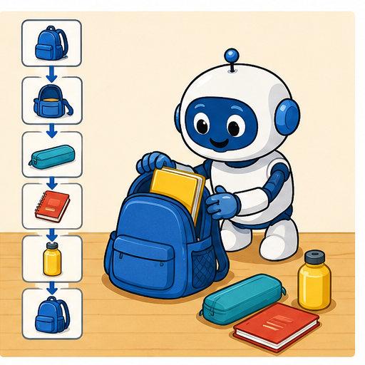
Learner name:
Readiness for the connected explanation
Two cards have the same recorded length but different widths and labels. Why can the length-only record fail to distinguish them?
This week’s end goal
By the end, I can trace changing state and explain why instruction order matters.
Student lesson · 2 of 16
Notice the evidence
PICTURE STORY
Look Closely Before You Explain
Pictures give clues; evidence tells us what the clues mean.

What do you notice?
Name three visible details without explaining them yet.
Circle the detail most connected to the system's decision.
Name one detail that may be decoration or distraction.
Make a first prediction and state the clue that supports it.
My observations, prediction, and evidence:
A closer explanation
A classroom score display starts with the number 4. Its instructions are: add 3 to score; double score; subtract 2 from score; report score and stop. What number should it report? Before doing the arithmetic, name the value being tracked and write its starting value. Here the variable is score and the initial state is score 4.
An algorithm gives precise instructions for a task. In this chapter each instruction is carried out once, in the written order. An update replaces the current value. After adding 3, score is 7. The next instruction therefore doubles 7, not the original 4. Keeping only the starting value in mind is a common source of errors.
A variable name stays the same while its value may change. Think of score as the label on an erasable number box. Updating the box does not keep all earlier numbers inside it. A separate trace preserves those earlier states so we can explain how the result was reached. This score procedure follows fixed arithmetic instructions; it does not learn from examples.
Student lesson · 3 of 16
See how it works
VISUAL MECHANISM
Input → Process → Output
Follow the information instead of imagining magic inside the machine.
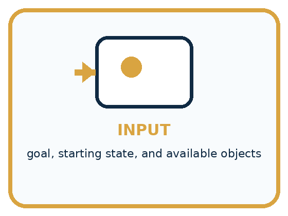
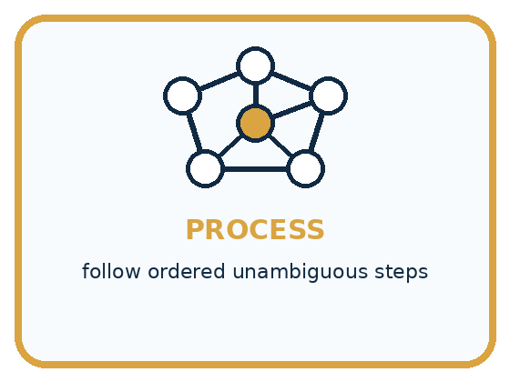
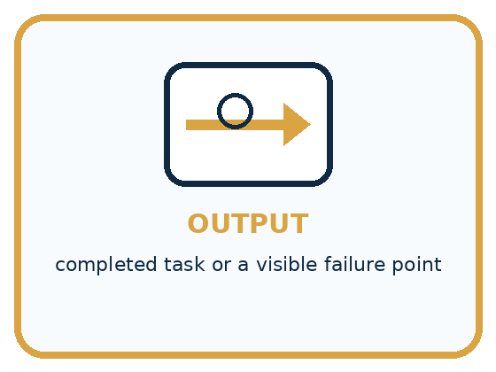
INPUT goal, starting state, and available objects
PROCESS follow ordered unambiguous steps
OUTPUT completed task or a visible failure point
Draw a fresh example with all three stages:
A closer explanation
Write the initial state first. For each instruction, read the latest value, perform the operation, and record the new state. A transition is the change from one recorded state to the next.
Follow the current score through three updates
In words, double score means calculate twice its current value and store that result in score. Add 3 to score means increase the current value by 3. Set score to 3 means replace it with 3 instead. These instructions sound similar but do different things: if score is 7, adding 3 produces 10, while setting it to 3 produces 3.
A trace is evidence of one execution from one initial state. To compare two procedures fairly, keep the initial state the same and list every intermediate value. Then you can point to the first difference instead of only comparing the final numbers.
Connect the picture and the explanation
Point to the input, the deciding step and the result in this week’s visual. Explain the same step in ordinary words. A picture helps when you can say what each part represents.
Student lesson · 4 of 16
Compare the cases
PICTURE GALLERY
Four Cases, Four Clues
Use the visual cue, then read the evidence carefully.
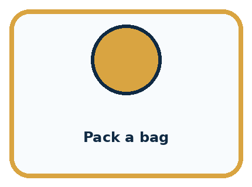
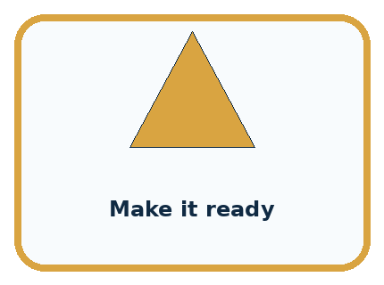
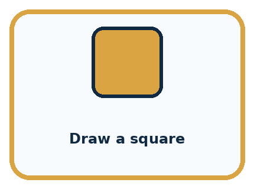
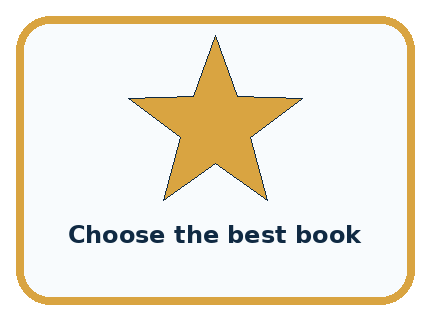
CASE 1 — Pack a bag Clue: choose item, open bag, place item. Meaning: ordered task.
CASE 2 — Make it ready Clue: meaning is unstated. Meaning: ambiguous instruction.
CASE 3 — Draw a square Clue: four turns and moves. Meaning: testable procedure.
CASE 4 — Choose the best book Clue: needs criteria. Meaning: goal without algorithm.
Which two pictures are easiest to confuse? What evidence separates them?
Change one thing in the pictured case
Change: Change the starting score to 0 for both recipes.
Prediction: A reports 3 and B reports 7.
Reason: A: 0→0→4→3. B: 0→4→8→7.
Student lesson · 5 of 16
Words that unlock the idea
VOCABULARY
Words You Can See and Use
The badge is a memory cue; the definition does the real thinking work.
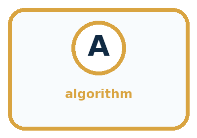
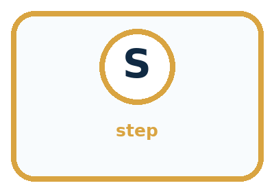
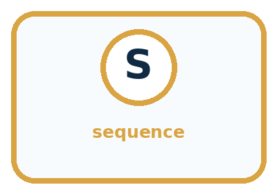
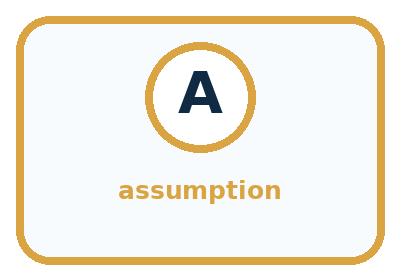
| Word | Meaning | My example |
|---|---|---|
| algorithm | ordered procedure for a task | |
| step | one executable action | |
| sequence | the order in which steps run | |
| assumption | condition taken for granted |
Misconception detective
CLAIM TO REPAIR People will know what I meant.
Use one vocabulary word and one piece of evidence to repair it:
Words used in the closer explanation
| Word | Meaning |
|---|---|
| Variable | A named place for a value that can be updated |
| State | The current values being tracked at a particular point in a process |
| Initial state | The values before the first instruction is carried out |
| Trace | A record of the state as instructions are carried out in order |
Student lesson · 6 of 16
Follow a worked example
WORKED EXAMPLE
Watch the Reasoning, Not Just the Answer
Every step connects a claim to observable evidence.

STEP 1 — OBSERVE goal, starting state, and available objects
STEP 2 — TRACE follow ordered unambiguous steps
STEP 3 — CONCLUDE completed task or a visible failure point
What new evidence could change this answer?
A closer explanation
| Stage from score 4 | Add then double | Double then add |
|---|---|---|
| After first instruction | Add 3 gives 7 | Double gives 8 |
| After second instruction | Double gives 14 | Add 3 gives 11 |
| After subtracting 2 | Report 12 | Report 9 |
Both procedures use add 3, double and subtract 2, but the first two operations are exchanged. Doubling after the addition also doubles the extra 3. Adding afterward does not. The final difference comes from the order, even though both procedures started at 4.
Now use two number boxes: A starts at 2 and B starts at 0. Copy the current value of A into B, then add 5 to A. After the copy, A is 2 and B is 2. After the addition, A is 7 and B remains 2. Copying stores the value at that moment; it does not create a lasting connection between these number boxes. Record both values after each instruction, including the one that did not change.
Learn from the worked case
Cover the result before checking it. Say what is given, choose the procedure, and follow one step at a time. Then uncover the result and explain your first mismatch. Ask why a step is allowed, not only what number it produces.
A pictorial worked case: Algorithms as Recipes
A fictional paper badge machine transforms an initial score using an ordered recipe.
The facts we will use
Start score=3. Recipe A: double, add 4, subtract 1, report.
Recipe B swaps the first two operations but keeps the same starting score.


Read the picture one step at a time
Why this result follows
Every instruction reads the current score, not the original one unless explicitly told to. In B, doubling also doubles the added 4. In A, the extra 4 is added after doubling. The final difference of 4 follows from that order, not from different starting data.
What this example does not establish
One traced input checks one run; it does not establish every recipe is equivalent or validate an entire program.
Read the labelled picture: Use the arrows to explain where the two zero-start runs first differ.
Change one thing: Change the starting score to 0 for both recipes. Predict the result before checking the explanation. What remains the same?
Student lesson · 7 of 16
Find and repair a mistake
COMPARE
Same Result, Different Reason
A comparison helps reveal the true concept boundary.
| Case | Evidence | What it shows |
|---|---|---|
| Pack a bag | choose item, open bag, place item | ordered task |
| Make it ready | meaning is unstated | ambiguous instruction |
| Draw a square | four turns and moves | testable procedure |
| Choose the best book | needs criteria | goal without algorithm |
Repair two tempting claims
CLAIM A People will know what I meant.
Repair:
CLAIM B An algorithm must be written in a programming language.
Repair:
A closer explanation
A final value does not reveal every step that produced it. Starting at 10, adding 2 then subtracting 2 reports 10. Adding 4 then subtracting 4 also reports 10. The intermediate states differ. If a task requires a particular procedure, the final answer alone cannot establish that the required steps were followed.
Before running an algorithm, state its initial values, the meaning and order of each instruction, and when to report and stop. Our short procedures stop after their listed steps. A correct trace shows what those instructions do for the given start; it does not establish that the procedure solves every possible task or that a real-world display was measured correctly.
Student lesson · 8 of 16
Practise together
GUIDED PRACTICE
Try It, Check It, Explain It
Use support now so you can succeed independently later.

Explain how the picture story demonstrates this idea: An algorithm is an ordered, testable procedure, with or without code.
Use a fresh example to explain algorithm.
Trace a new input → process → output example.
Find and repair the error in: An algorithm must be written in a programming language.
Invent one edge case and name the safe response.
A closer explanation
A learner traces the score procedure as 4, 7, 8, 6. The first update is correct: 4 plus 3 is 7. The first error is the next update: double should use the current 7 and produce 14, but the learner doubled the starting 4. Correct that step and recompute the later subtraction, giving 12. Changing only the final answer would hide the faulty reasoning.
If two traces disagree, compare the initial state before blaming an instruction. If the starting values match, compare the states in order and stop at the first difference. Check the instruction used there, repair it if needed, and continue from the corrected state.
Practise with less help: Distinguish replacement from addition
Use workbook W2 for the connected example “Algorithms and changing state”. First fill the input and rule boxes. Try the middle steps before asking for a hint. After a hint, try the next step yourself.
| Plan | Do | Check |
|---|---|---|
| What is given? Which rule or procedure applies? | Record each intermediate step. | Does the result follow? What remains unknown? |
Explain your trace to a partner. Your partner points to one step to check. Swap roles on the next case. Each person writes their own explanation.
Check your reasoning
Use the worked case for Algorithms and changing state. Proposed explanation: “Every instruction uses the original number”. Decide whether this explanation is supported. Point to the step or supplied fact that decides; explain your repair if needed.
Answer on your own before discussion. If you are unsure, say which step you need help with.
Explain the picture
Use the arrows to explain where the two zero-start runs first differ.
This is supported practice. Keep the separately named independent case for an attempt before feedback.
Student lesson · 9 of 16
Run the investigation
EXPLORER LAB
Paper Robot Bag Pack
Predict first, test honestly, and explain what the evidence means.

State your prediction before the result is known.
Complete the task: Write directions for a paper robot to pack a bag.
Keep a normal case and an edge case clearly separated.
Record what happened—even when it does not match your prediction.
Explain the result, one limitation, and the next useful test.
| Case | Prediction | Observed result | What it means |
|---|---|---|---|
| Normal | |||
| Edge |
Plan → try → check
Before trying: what do I expect, and why? While trying: which step could first go wrong? Afterwards: what did I actually observe, and what should change? Keep “not run” if you only traced the procedure.
Student lesson · 10 of 16
Build your understanding
PRACTICE LADDER
Climb from Recall to Defense
Each step asks for a stronger kind of understanding.

RECALL Define algorithm.
EXPLAIN An algorithm is an ordered, testable procedure, with or without code.
TRACE Show the input, process, and output.
DIAGNOSE Repair: People will know what I meant.
TRANSFER Apply the idea to a new home or classroom case.
CREATE Design one revealing test.
DEFEND Give a claim, evidence, mechanism, limit, and safe action.
Student lesson · 11 of 16
Connect your project
PROJECT
Helpful Classroom Sorter
Build one coherent system across the year, one evidence-based decision at a time.

What real classroom need does this serve?
What information is necessary—and what should stay private?
What happens inside the process?
What normal and edge cases will you test?
When should it say not sure or ask a person?

My project decision:
Evidence for your project
Write the sorter’s steps in order, showing which values each step updates so a partner can reproduce the result.
Student lesson · 12 of 16
Show what you know
MASTERY
Fresh-Case Independent Proof
Complete this after teaching and guided practice have ended.

□ Name or draw the fresh case.
□ Trace input, process, and output.
□ State the conclusion and strongest evidence.
□ Name one limit, failure, missing clue, or fairness/privacy concern.
□ Explain one safe next action or improvement.
Independent evidence:
My level: □ Not yet □ With one hint □ Independently □ I can teach it
Student lesson · 13 of 16
Study a complete case
Week 9 Worked case
Use the supplied details to practise the weekly concept before attempting the independent question. This case extends the illustrated lesson.
The situation
A robot starts on the left of three squares, facing right. It executes MOVE, MOVE, STOP, each MOVE being one square.
The question
Trace the position after each command.
Worked explanation
Middle, rightmost, unchanged. Direction, distance and starting conditions must be specified.
Explain it in your own words
Which detail supports the answer, and why does it matter?
Trace the supplied case visually
Trace a robot's position
| Evidence or stage | Value or result |
|---|---|
| Start | Left square |
| MOVE | Middle square |
| MOVE | Right square |
| STOP | Right square |
A robot starts on the left of three squares, facing right. It executes MOVE, MOVE, STOP, each MOVE being one square.
Trace the position after each command.
Middle, rightmost, unchanged. Direction, distance and starting conditions must be specified.
Student lesson · 14 of 16
Try a new case independently
Independent case: Trace two changing number boxes
For a new display, X starts at 4 and Y starts at 1. Copy the current X into Y; add 3 to X; double Y; report both and stop. Record X and Y initially and after each instruction. Explain why Y does not become 7 when X changes. Then swap the first two instructions and trace the new procedure from the same initial state.
Attempt this case before feedback. Record any help. Earlier examples below are further practice; a case already practised with feedback cannot establish fresh transfer.
Week 9 Independent application
Close the worked explanation. Apply the idea to this different question without copying.
Instructions say pick up a pencil, write your name, then find paper. Find the first ordering problem and rewrite the three steps so another learner can follow them.
My answer, with a trace, calculation or supporting evidence
Create and test
Change one relevant detail. Predict the result before testing. Include a boundary or missing-information case when it helps reveal a limit.
My changed input and expected result
Connect to your project
Write the first executable sorting algorithm for one easy item before adding branches or AI.
The evidence I will keep
Your teacher has the independent answer and scoring criteria. Complete the matching workbook week to keep your practice evidence together.
Transfer practice from the original programme
On numbered squares 0–5, start at 1 facing increasing numbers. Execute FORWARD 2, TURN, FORWARD 1, STOP. Define TURN as reversing direction. Trace position and direction after every instruction. What if TURN were unspecified?
Use feedback to improve
Attempt the independent case before hints. Record whether you worked alone, used a hint or followed a model. After feedback, fix the first unsupported step and explain why it changed. A later check uses a changed case, not a copied answer.
Student lesson · 15 of 16
Your lesson route
Start with this question: A fictional paper badge machine transforms an initial score using an ordered recipe.
| By the end, I can | How I will show it |
|---|---|
| Trace an ordered algorithm using the current value after every instruction | Explain the deciding step, show a trace or test, and state one limit. |
| Explain how changing the initial state or instruction order can change the result | Explain the deciding step, show a trace or test, and state one limit. |
| Locate the first incorrect update and distinguish copying a value from linking two variables | Explain the deciding step, show a trace or test, and state one limit. |
Remember → watch and explain → try with help → investigate → try independently → keep project evidence. Your teacher may spread this lesson across several classes.
Keep your first prediction. Compare it with what the evidence shows and explain any change.
Student lesson · 16 of 16
Finish and return
Close your notes. Explain this goal in your own words: Trace an ordered algorithm using the current value after every instruction
If you are unsure, return to the worked picture and explain one arrow. If you are ready, change an input or assumption and justify your prediction.
Save your workbook evidence. At the next review, try a different case before opening your old answer.